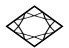
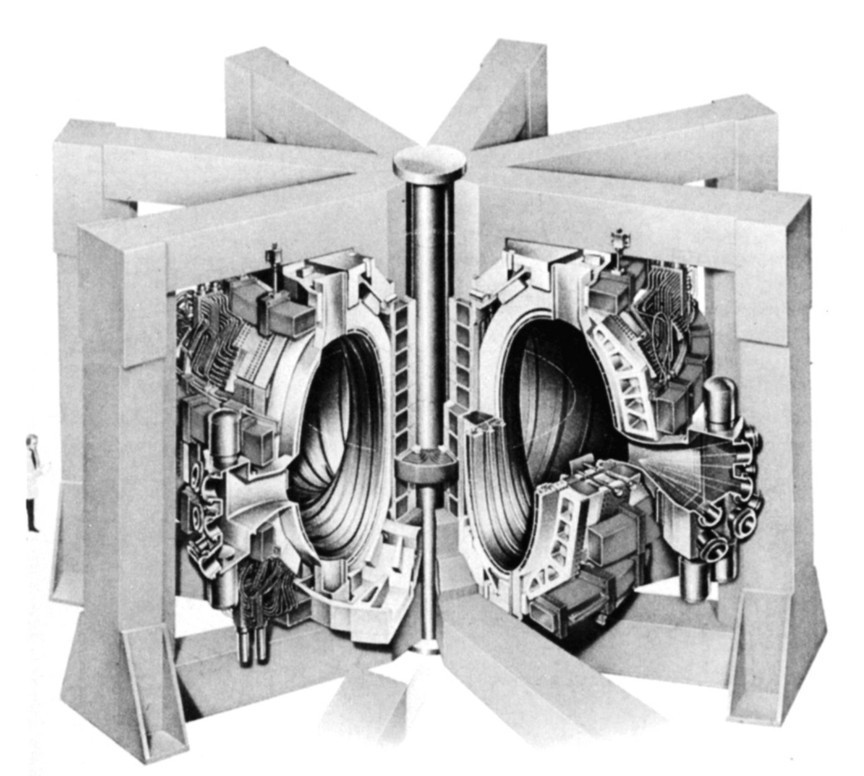
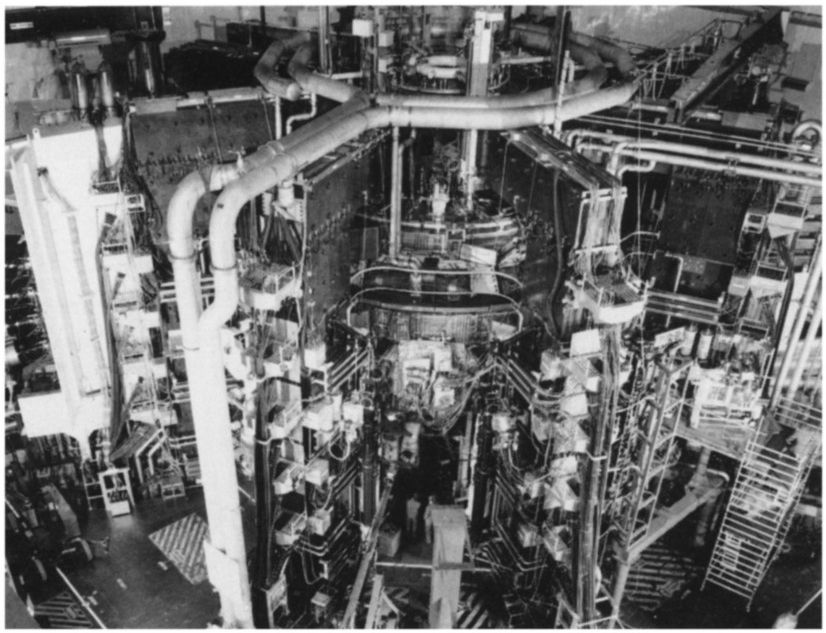
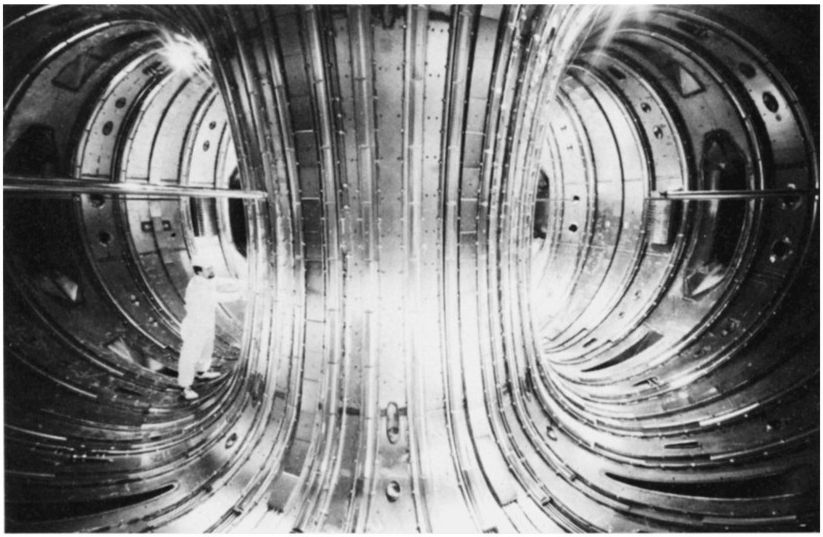
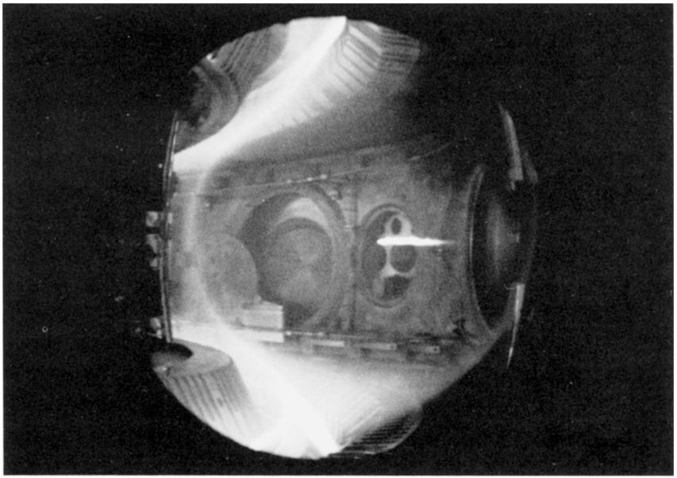

第十八章第二天早晨我和爱因斯坦在CERN的自助餐厅阳台上会面，共进早餐。我们从山上回来晚了，他看起来很疲倦，有点粗声地同我打招呼。他静静地喝着卡布其诺。牛顿最后出现了，他情绪高昂，准备好了讨论。他已经抽空绕CERN的场地散步了。
牛顿： 我早上散步时看见很多事情想要问问你，但是昨天我们商定我们的讨论应该以系统的方式进行下去，所以让我们首先探讨当今利用核能的途径吧。
哈勒尔： 自第二次世界大战后期两颗原子弹爆炸以来，没有其他的核弹被投到有人区；另一方面，发展新式武器的工作一直在紧锣密鼓地进行着。在这方面最重要的进展是基于核聚变造出来的炸弹。
爱因斯坦： 我昨天夜里几乎没睡；我禁不住想象利用铀弹或钚弹所能做的事情。我想到的一件事是爆炸一枚铀弹可以用来在很短的时间产生启动核聚变所需的高温。我担心那只可能用作制造炸弹——我指的是氢弹或氘弹。但是这会比铀弹具有更大的破坏性。
哈勒尔： 这一点的确被想到了。事实上，第二次世界大战之后不久，美国和苏联的几位专家就顺着这些思路试图制造氢弹。他们特别快，在曼哈顿工程开始之后仅仅10年就成功了。它的运作方式很简单。一枚小型原子弹爆炸使燃料升温，达到聚变所需的温度。一颗裂变炸弹的爆炸启动另一次更强烈的爆炸。
在过去几十年，超级大国，特别是美国和苏联，一直在积聚各种各样的但都是依照这一原理制造的核装置，形成可怕的核武库。一枚氢弹的效力远大于基于裂变原理制造的原子弹，因而它的破坏潜力也同样远大于原子弹。毫无疑问，如果在地球上引爆一枚氢弹，所造成的闪光用肉眼在月亮那么远的距离都看得到。
一枚大型氢弹的破坏力大约相当于2亿吨TNT当量，你们也许知道后者是一种威力很大的炸药。爆炸产生的威力差不多有一半转变为巨大的始于爆炸点的压力波；大约1/3表现为热和光辐射，从爆炸中散发出来。
倘若这样一枚炸弹在日内瓦城上方50千米的晴空引爆，你们可以想象会发生什么。整个城市将被摧毁，日内瓦湖四周的小镇和周围的法国乡村也将被摧毁。在日内瓦方圆超过100千米的地区，直到伯尔尼城，而且远至侏罗山和阿尔卑斯山，所有的森林、所有的可燃物质都将燃烧。换句话说，整个瑞士西部和相邻的法国部分地区将只余废墟。大约会有100万人丧命。如果一枚氢弹在一个人口密集地区的上空爆炸，比如说德国的鲁尔区或者纽约和莫斯科城，那么将有几百万人丧命。
牛顿： 我请求我们舍弃这么残暴的关于核能“利用”的部分。我对从原子核产生能量用于和平目的的可能性更感兴趣，不管是通过聚变还是通过裂变。
哈勒尔： 我们首先讨论聚变吧，它是发生在太阳内部能量产生的方式。而当我谈到核聚变时，我不仅仅指氘核聚变为氦核。另外一个有趣的过程是氘核和氚核的聚变。
氚核是含有一个质子和两个中子的原子核。它可以通过把一个中子加到一个氘核来制造。如果我们现在加上一个电子使得它围绕这个原子核沿轨道运行，我们就得到一个超重氢原子，或者叫做氚。
把一个氘核同一个氚核合成，我们得到一个氦核和一个中子：
d+t→He+n。
这个反应可以用不同方式表达，以显示出单个初态核子：
（p+n）+（p+2n）→He+n。
我们从两个质子和三个中子出发，并以同样的数目结束。核子只是改变了它们的伙伴。但由于氦核是一种束缚得特别紧的原子核，这一反应实际上产生出能量——动能。换句话说，所产生的氦核与中子以极大的速度从相互作用点离开。
仔细分析这个过程，我们发现初始质量的0.4％转化成能量。顺便说一下，这个反应就是主要用于热核武器的反应。我们显然应该问问自己，我们是否也能够利用它——或者就此而言，任何其他聚变反应——为了和平用途来产生能量。但这种想法还没有被证明是可行的，尽管我们为此做出了最大努力。
爱因斯坦： 我认为那是由于把燃料，氘或氚或无论哪一种燃料，加热到大约1亿度的温度存在很多困难。
哈勒尔： 高于1000万度但远低于1亿度的温度已获得并维持了很短的时间，即几分之一秒之内。但那是不够的。我们最终是否会成功全写在星象上了 [1] ，倘若你们容许双关语的话：你们可以说那写在聚变实际发生的地方。
牛顿： 但是在地球这儿怎样才能获得那么高的温度呢？
哈勒尔： 首先，把燃料加热到大约12 000度。这一温度足以使电子脱离原子核并将原子燃料转变成等离子体。其次，等离子体通过强磁场被强烈地压缩，后者将前者更进一步加热；用这种方法已经得到差不多4000万度的高温。然而，正像我说过的那样，如此高的温度只可能保持非常短的一段时间。
目前，在欧洲做这类研究最先进的实验室是英格兰的JET实验室（欧洲联合核聚变实验室）——位于牛津附近的卡勒姆。那里的科学家正在朝着核聚变所需的温度缓慢逼近，而且最近在这个方向上已经取得了某些进展。
为了获得所需的高温，人们所做的其他一些新的尝试是把光子，或者更准确地说是激光束，射入聚变燃料。一束强大的激光可以加热氘并短暂地产生所需的聚变温度。数百万的聚变反应已经被这样启动了；但是热核燃烧的链式反应——我们希望它仍旧是可以控制的——仍未发生。我们不知道我们究竟能否设法基于聚变建成发电站，以获得便于使用的能量。然而，我们的确明白一点：倘若可控制的热核链式反应某一天果真出现的话，我们就可以无限度地产生能量了。在地球上存在丰富的聚变燃料供给，尤其是氘。一个像美国这么大的国家每天所需要的全部能量可以轻易地由仅仅250千克的氘和氚的聚变产生出来。
爱因斯坦： 但是核裂变 怎么样？核裂变已被利用到什么程度来实现和平发电？
哈勒尔： 受控核裂变的技术方面目前看起来比核聚变要有利得多。这一点很容易解释：核裂变是自发地发生的，没有必要把可裂变原料加热到很高的温度或者以某种特殊方式处理它。
另一方面，很容易控制裂变过程。我们已经看到，对于一定量的可裂变原料，比如铀，如果它足够多，链式反应就会开始。必须存在一个临界质量。在核反应堆中，裂变是由一个适当的操纵装置控制的，它使得裂变不像雪崩或炸弹爆炸那样进行，而是以一种连续的稳定的方式发生。为此，我们需要精确地控制在反应堆中蹦蹦跳跳的中子数目并不断地启动新的裂变。可以借助于控制棒实行这种控制，它们是由原子核可以轻易地吸收那些中子的材料（例如镉）组成的。一把控制棒插进铀的活心区，链式反应就会中断。把它们收回一点，裂变将慢慢地重新发生。所以裂变是可以控制的，而且一旦发生任何故障就可以关闭反应堆。
爱因斯坦： 尽管如此，我仍然禁不住想这个过程有点危险。各种意外事件或许会意想不到地凑在一起而导致爆炸的发生，你们认为这不可能吗？
哈勒尔： 你的确不必担心像原子弹那样的核爆炸。反应堆修建得与炸弹很不相同。即使发生了严重故障而且所有的控制装置都失效了，所能发生的最坏的事情不过是反应堆的熔毁。决不会发生核爆炸，一个核反应堆完全不存在原子弹所需的浓缩的可裂变原料的临界值。

图18.1 位于英格兰卡勒姆附近的欧洲联合核聚变实验室JET。（承蒙卡勒姆的JET联合公司惠允。）

图18.2 JET实验装置的照片。（承蒙卡勒姆的JET联合公司惠允。）
关于这一点，我应该指出我们这个星球上的第一座反应堆是大自然而非人工建造的。几年前，在西非国家加蓬的奥克洛铀矿沉积物中发现了一种特别的铀同位素具有显著的浓度。对于这个奇怪现象的唯一解释是浓缩铀属于一个天然核反应堆的剩余物。专家们计算出18亿年前在该地区一定发生过一系列的核链式反应，持续时间长达10亿年。为了弄清核废料是如何衰变的，甚至可以利用这个天然反应堆的残余物来做研究。更令人感兴趣的是这个反应堆似乎受到了自动控制，它从未爆炸过。

图18.3 JET的环状燃烧室内部。在这个环中，等离子体借助于强磁场被加热到几百万度的温度。左侧的技师可以说明该图的比例尺。（承蒙卡勒姆的JET联合公司惠允。）
我并非试图淡化从核裂变产生能量的危险性。然而，我们应该承认，上百座核电站正在这个星球上运转，而且它们已经十分成功地运行了许多年，只有少数值得注意的例外。我们不要忘记，一些国家已经利用核反应堆解决了很大一部分能源需求。只有一次，在20世纪80年代中期，位于乌克兰的切尔诺贝利附近的核电站发生了严重事故。在那次事故中，一座反应堆被完全摧毁了，大量辐射物质被释放到空气中。后来的调查表明，灾难的发生不仅是因为一些不幸的偶然事件凑在了一起，而且是由于某些技术人员显著缺乏应有的工作能力。苏联政府公开承认了这些问题。

图18.4 轴对称偏滤器实验装置（ASDEX）燃烧室的内部视图。在这个位于德国慕尼黑附近的加尔兴市的聚变实验中，等离子体被加热到超过1000万度的高温。这里显示的是在蒸发过程中，一个氢靶丸刚刚被从右侧注入，还处于凝固的状态。［承蒙德国加尔兴的马克斯·普朗克等离子体物理研究所（IPP）惠允。］
爱因斯坦： 我们能够保证类似的事故不会再发生吗？
哈勒尔： 我们没有任何保证。尽管如此，我确信核反应堆能够以一个可以接受的安全保证程度来运转。但是不存在绝对的保证。
牛顿： 这我乐意接受。在科学和技术上，没有理由做绝对的、无可置疑的声明。在过去的这几天里我已经对此有了切身体验。
爱因斯坦： 先生们，让我们在这儿避免诡辩吧。如果事情到了像发生在苏联那样的严重核灾难的程度，我确信类似的灾难可能再次发生。要不然的话，你们有相信情况并非如此的理由吗？
哈勒尔： 没有令人信服的理由。尽管如此，苏联的事件已经给了我们一个重要的教训，肯定不会再犯那里曾经犯过的错误。但是无法保证不出现人为的失误。比方说，那些应对切尔诺贝利反应堆管理不善负责任的工程师们为了做几个实验而故意关闭了核电站的自动安全系统，他们没有意识到那样做所涉及的危险。与使用核反应堆相关的真正危险，更多地同政治和经济环境联系在一起，而较少同技术问题有关。
如果一个运转着核反应堆的国家卷入了军事冲突，那就潜伏着特别的危险。敌方下达命令袭击反应堆的危险总是存在的；例如，他们可能会试图依靠小型核爆炸来炸毁反应堆。那样将使得整个地区长期不适合人居住，无数人将沦为牺牲品。基于这个理由，核反应堆不应该建在那些政治和经济都不稳定的国家。但是实际上看起来情况并非如此。一个国家或地区的政治和经济稳定性可能随着时间改变。只要想想发生在苏联的事情，一切就都明白了。
爱因斯坦： 即使我们可以乐观地排除掉你刚才提到的政治问题，你觉得用核反应堆来产生能量——换句话说，开发核裂变——能解决将来肯定会出现的能源短缺问题吗？
哈勒尔： 理论上，我们容易想象利用核裂变产生能量也许会成为未来主要的能量来源——我再一次假设我们不必担心政治方面的问题。可是考虑到今天国际局势的发展趋势，我们就不能那么乐观了。有些其他的理由与核裂变无关，其中之一就是怎样处理发电厂排出的核废料问题。
牛顿： 可是请告诉我，这种废料比那些来自烧煤或者烧油的发电厂所排出的废料更危险吗？我在剑桥读过一篇文章说那些废料存在许多问题。
哈勒尔： 也对也不对。那要看所涉及的废料数量的多少。煤和石油燃烧产生的有毒物质渗入大气肯定对环境有害。核反应堆的废品由于它们的放射性则以不同的方式损害自然环境。如今我们知道，从裂变过程中放射出来的大部分原子核都是不稳定的；它们经过一定的时间衰变成不同的、稳定的原子核。在这个过程中，会有高速运动的粒子释放出来，如被称为γ量子的高能光子。
很多放射性物质是天然存在的。我们所处的环境的天然放射性在数十亿年前一定更强烈；那时地球还比较年轻，放射性物质肯定相当普遍。然而，大多数不稳定的原子核自那时起都衰变成了稳定的最终产物，使得我们如今在地球表面所发现的元素几乎都是稳定的。尽管如此，天然放射性是不能被忽视的。我们都暴露在它面前。
牛顿： 现在我明白了爱因斯坦在他那篇关于能量公式的3页纸文章中谈到依靠镭盐检验他的理论时意指什么了。镭一定是你所说的不稳定的或放射性的元素之一。
哈勒尔： 对。镭所辐射出来的能量（注意该元素的名称！ [2] ）就严格属于核能。当爱因斯坦在他的文章中提出把镭作为支持他的论点的例证时，他是完全正确的。但是在他那个时代他无法知道他的公式在核反应的情况下有多么重大的意义。
爱因斯坦： 我刚才想起了我在那篇关于相对论的文章发表后不久写给我的朋友哈比希特的一封信。我写道：“镭出现的质量减少应该测得到。这个想法既迷人又有趣，我真的不知道仁慈的上帝是否正在这儿发笑并且正在愚弄我。”现在看起来他好像没有嘲弄我。你们看，上帝是难以捉摸的，但他不怀恶意。
哈勒尔： 像镭这样的不稳定原子核所发射出来的放射性粒子对于我们周围的生物系统是非常危险的，当然对人体也很危险。它们破坏生物的细胞组织。核反应堆中发生的裂变给我们留下了长寿命的放射性物质，这些物质通常由重元素组成；大约需要1万年的时间，这些元素的放射性才会降低到与我们在天然环境中观察到的最不稳定的矿石所具有的放射性可比较的水平。
爱因斯坦： 你在提醒我们：我们不得不把核反应堆的废料储存至少1万年。时间太长了，其间可能发生许多问题。如果1万年前住在山洞里的祖先给我们留下了他们的垃圾——假设这些长寿命的垃圾都是那时制造的，我们当然不会高兴。
哈勒尔： 这的确是个严重问题。另一方面，现代技术允许我们把放射性垃圾储存在地下深处地理条件非常稳定的地方，例如地面以下1千米左右废弃的盐矿。那可以保证很大的安全性。以地质时间计算——通常以几百万年为单位——1万年就显得很短暂了。
假设我们将核裂变产生的放射性同地球表面天然发生的放射性做比较，人类一直暴露在后者面前。暂且假设我们从核裂变产生的能量与从燃烧全世界已知的煤储蓄所能产生的能量一样多，并暂时忘掉这种燃烧本身将会留下数量惊人的有毒垃圾。即使在这种极端的情况，由核反应堆所产生的长寿命放射性物质的放射性与天然存在的放射性相比是可以忽略不计的，准确地说，前者只占后者的万分之一。
爱因斯坦： 这听起来像是好消息。尽管如此，也不能把反应堆的废料均匀地散布在地球的外表；得把它们集中在少数地点。
哈勒尔： 对。所以说我刚才给你们做的比较有点令人误解。然而，那无论如何是有用的，倘若我们在很大程度上依赖于核反应堆的话，上述比较会使我们对所遗留的放射性物质有个量级上的概念。这些反应堆的废品并非什么新现象，它们只不过加入到天然存在的放射性元素中；而这种增加小得很，一般可以忽略不计。
爱因斯坦： 但是你刚才不是告诉我们说你并不相信能源短缺的问题可以靠反应堆来解决吗？
哈勒尔： 我认为只要能够控制放射性废料，我们就可以暂时利用核裂变适度地产生能量。如今停止产生核能是不负责任的。我们没有合适的替代方法；烧掉像煤和石油这样的宝贵原料肯定不是好办法，更不要说燃烧引起的大气污染。
实际上，我正在考虑50年到100年的一段时间。更长期地依赖核裂变所产生的能量在我看来是不合适的，除非可以把核废料保持在一个可控制的水平。只有把世界人口从今天的50亿降低，大概降到1亿左右，才有可能做到那一点。可是，人口依然在增长；而我无法想象，更多人口（比方说100亿）所需的能源可以通过裂变反应堆来产生，却既没有偶尔发生的灾难性事故也不造成大面积的放射性污染。
爱因斯坦： 换句话说，核裂变似乎没有给出一个真正解决能源问题的答案。
哈勒尔： 是的。任何声称有了完美的解决方案的人都是不可信的。将来只能缓慢而痛苦地解决能量生产的问题。必须探索各种可能性，而核能只是其中之一。还需要通过许多当代可行的技术来节约能源。我们应该记住，能量节约得越多越好，那样我们就不需要再从头开发太多的能量了。
在南部国家中，能源，尤其是电能，将越来越多地利用太阳来产生。此外，我们希望世界人口从长远来看会缓慢而平稳地减少。就未来的能源问题而言，你们可以看出，我既不乐观也不特别悲观。
牛顿： 我注意到，你在谈到能量的产生时并没有提及核聚变。
哈勒尔： 我昨天就告诉你们了，目前还不清楚我们究竟能否从聚变获取能量，而我只是在说眼下我们在地球上能办到的事。在太阳内部始终发生着聚变，而我们从到达地球的太阳射线所获取的能量也许可以称做间接的聚变能量。那可能是我们利用核聚变所能得到的一切了。然而，我们即使能够成功地控制聚变，我们仍然不能肯定能量是否能以技术上有用的方式产生出来。有一点是明确的：从今天的研究到将来可能的应用，我们还有很长一段路要走。
爱因斯坦： 聚变的废料怎么办？
哈勒尔： 像所有的核过程那样，核聚变也会留下放射性垃圾。但聚变这儿的有利条件是：放射性元素大多是轻元素而且寿命不太长，它们肯定不会造成1万年的危险。不幸的是，建造一座聚变反应堆得用到像金属这样的重元素。由于聚变过程会使得这些重元素表现出放射性，聚变反应堆或许也会给我们带来放射性垃圾的问题。但是我认为这个问题多半不会像裂变反应堆的情况那么严重。
关于核聚变，我不想表现得过于悲观。问题仅在于，我们目前不知道是否有人能够建造一座聚变反应堆，提供经济的、可利用的能源。毫无疑问，应该鼓励进一步的研究工作，然而你们知道科学研究的成功是不可规划的。成功可能突然出现，也可能要等很长一段时间。有时由于所采用的方法不切实际，根本就不会成功。但即便我们找到了一个经济上可行的办法利用核聚变来产生能量，也许从现在算起50年之后，那也绝不意味着我们想得到多少能量就能得到多少。首先，仍旧存在核废料的问题；其次，拥有那么多的能量也许并不是件好事。经验表明，当能源供应充足的时候，我们的社会就会不计后果地浪费能源。而我们不希望这种事发生在自身，倘若我们想要保护环境的话。
这话听起来也许不合逻辑。但是我坚信，只要我们设法非常节俭地使用我们的能源和原料，包括核能，人类文明就能够在我们这个星球上延续下去。我相信这是我们唯一的出路。
我看了看手表——一上午几乎过去了。我的一个老朋友，来自美国的科学家同事，走了进来；他朝我点点头，好奇地看着我们这个小组。我们互致问候，但是我很小心，不介绍我的伙伴的姓名全称，只提到他们的名字。我的朋友同意当天带我的两位同伴参观CERN。我们将在下午晚些时候再碰面，地点是理论部楼上的办公室。我随便什么时候在CERN呆几天都用那间办公室。
注解：
[1] 原文为is written in the stars，西方社会用星象预测命运，故此话意为“全凭命运的安排”。——译者
[2] 这里指的是镭（radium）和辐射（radiation）两个词的英文拼法很相似，前者含有辐射的意思。——译者